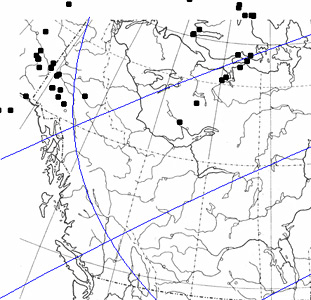
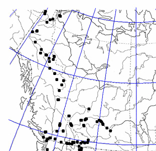

Before a map image can be used in Cartographer, the map must be calibrated and the parameters of the projection specified. In particular, Cartographer cannot plot points unless:
- At least three points of known latitude and longitude (calibration points) are specified.
- Parameter values for the map's projection are specified. There is one projection (Mercator) that does not require parameter values, but this is an exception.
If this is not done, Cartographer will display "Uncalibrationed Projection" in large letters on the map.
Calibration Points
Adding and deleting calibration points
To add calibration points, use the calibration tool (). Touch this tool on the map at a known location, and enter into the dialog box that appears the latitude and longitude of that location. Do this for at least three locations (ideally more) that are as far apart as you can manage both in latitude and longitude.
If you wish to remove a single calibration point, touch the calibration point on the point. If you wish to remove all calibration points, choose Plot>Calibration Points>Discard All Calibration Points.
Showing or hiding calibration points
By default, calibration points are visible on your map. To hide them, uncheck Show Calibration Points from the Calibration Points submenu of the Plot menu.
Saving calibration points to a file
To save calibration points to a file, choose Save Calibration Points from the Calibration Points submenu of the Plot menu. This is very useful to do if you have defined calibration points but then wish to do something that will automatically discard them, such as switch the projection chosen for the map.
Loading calibration points from a file
If calibration points have been previously saved to a file, that file can be loaded into Mesquite to set the calibration points to those specified in the file using Plot>Calibration Points>Load Calibration Points.
Parameter values
In addition to calibration points, most map projections will require some values for parameters specific for that map projection. For example, a Lambert Azimuthal Equal-Area Projection has two parameters, a standard latitude and a standard longitude. If you know these values for your map, you can enter them in the Plot>Projection Parameters dialog box. If you don't know the values, you can ask Mesquite to estimate them for you.
Asking Mesquite to estimate the parameter values
If you do not know the parameter values for your map, but have entered at least three calibration points, then Mesquite can attempt to estimate the parameter values for you. Choose "Optimize Parameters" from the Plot menu. ("Optimize Parameters" is not available for those projections that do not have projection parameters). Cartographer will calculate how closely the specified locations on the map of the calibration points match the expected locations based upon the projection. Varying the parameter values will increase or decrease the match; the Optimize Parameters command searches for the parameter values for which the match is closest.
 |
 |
Projection (with grid) before optimizing parameters |
Projection after optimizing parameters |
This Mesquite will not optimize parameters of the ellipsoid if an ellipsoid form is chosen.
One way to see how reasonable your map settings are is examination of the latitude-longitude grid (which can be turned on with Plot>Show Grid).
If Cartographer can't optimize parameter values
If Cartographer can't find a close match between the specified locations of the calibration points and their expected locations, it will warn you. There are several possible causes of the mismatch:
- You have chosen the wrong projection.
- Your calibration points are in the wrong locations.
- There are problems with the optimization process. On rare occasion we have noticed that the optimization routines make little progress, perhaps because of unusual properties of the projection. Sometimes asking Mesquite to optimize the parameters a second time will help.
Saving parameter & calibration information to a file
Once you have successfully added calibration points and set parameter values, you may wish to save this information to a file so that you can easily re-use the map in other contexts in Mesquite. To do this choose Save Parameters & Calibration from the Plot menu.
Loading parameter & calibration information from a file
To re-apply parameter and calibration information that has been saved to a file, load the file into Mesquite using Plot>Load Parameters & Calibration.